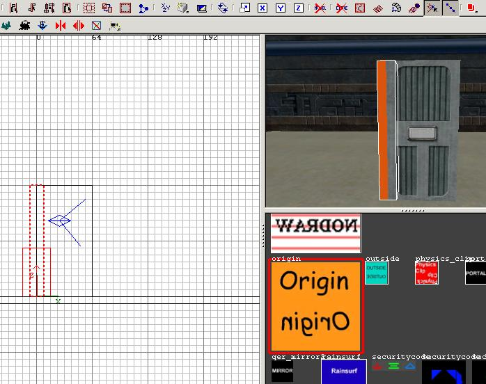
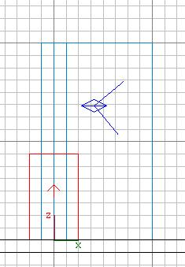
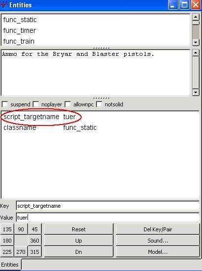
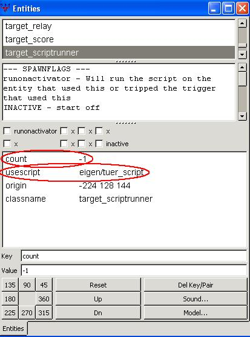

>> Mapping Academy - Tutorials <<
(c) 2004 www.darth-arth.de
Rotierende Tür
Author: Blue Wonder (Andreas P.)
überarbeitet durch Killermic
VORAUSSETZUNGEN:
>> Installation GTK - Radiant ( Tutorial )<<
>> Installation des BehavEd Script Editors ( Tutorial )<<
>> JK2 SinglePlayer, JK JA Single- und Multiplayer <<
In dieser Lehreinheit (Tutorial) lernen wir eine Tür zu machen, die sich an der Türangel dreht
Hilfreich:
ICARUS Manual.doc (ist bei den JK2 Editing Tools enthalten)
einige Überlegungen vorab:
Da es in JK2 keine
func_door_rotating
gibt wie z.B. bei "Return to Castle
Wolfenstein", müssen wir einen kleinen Umweg gehen und ein Script für die Türfunktion im unsere Map einbinden.
Unsere "rotierende Tür" besteht aus 3 Untereinheiten, die miteinander verbunden werden:
1) für das öffnen der Tür: ein
trigger_multiple. Dieser trigger wird mit einem
target_scriptrunner verbunden. Über den
target_scriptrunner wird die zweite Untereinheit unserer rotierenden Tür angesprochen:
2) ein Script, das die Tür auf- und zu schwingen
lässt
3) die Tür selbst mit einem origin als Dreh- und Angelpunkt. Beide werden als
func_static gekennzeichnet.
ans Werk:
Für dieses Tutorial brauchen wir zuerst einen einfachen Raum mit info_player_start und ein paar
Lichtern. Ich habe ihn als rotierende_tuer im Ordner Gamedata/base/maps abgespeichert.
Wir beginnen von hinten mit Punkt 3):
Zuerst bauen wir uns ein beliebig großes Reckteck ("brush") irgend wo auf den Boden in diesen Raum. Das ist unsere Tür (meine hat eine Höhe von 80 , Breite von 48 und Dicke von 8 Einheiten). Ich habe ihr im Beispiel die Textur bespin/door_new gegeben. Diese Tür braucht nun ihren Dreh- und Angelpunkt:
Dazu erstellen wir einen neuen Brush.
Die Größe ist auch hier im Prinzip egal, allerdings hat sich ein Würfel mir gleichen Kantenlängen ganz gut bewährt (meiner hat eine Kantenlänge von 16 Einheiten). Diesem geben wir nun die Textur system/origin.
Jetzt kommt das wichtige: Um die Mitte dieses origin-brushes wird sich unsere Tür später drehen!
Also den origin-brush bitte in xy-Ansicht so setzen, dass seine Mitte genau an der Stelle liegt, um die sich die Tür drehen soll (die Höhe über dem Boden ist dabei auch wieder egal).

Als nächstes, zuerst den origin-brush, dann die Tür mit Strg und linker Maustaste selektieren.
Jetzt mit dem Mauszeiger über der 2D-Ansich mit der rechten Maustaste klicken und bei func > func_static anklicken.
Zum Überprüfen, ob wir nun aus den brushs eine func_static gemacht haben, einfach z.B. die Tür selektieren und auf die Taste "N" drücken.
Da müsste jetzt classname func_static stehen. Außerdem sind die beiden brushes nach Deselektion in der 2D-Ansicht jetzt blau dargestellt.

nun zu Punkt 2): das Skript
öffne unter Programme > Zubehör den Editor von Windows (oder auch das
WordPad).
Falls nicht vorhanden, bitte von der Windows-Installations-CD nachinstallieren.
Dann folgendes dort reinschreiben:
// alles, was hinter zwei Strichen steht, wird bein Compilieren nicht übersetzt.
// ist ganz nützlich, um zum Testen einzelne Befehlszeilen
// vorübergehened auszublenden
//
//
rem ( "hier kann man einen Kommentar reinschreiben" );
sound ( /*@CHANNELS*/ CHAN_AUTO, "sound/movers/switches/switch1.mp3" );
affect ( "tuer", /*@AFFECT_TYPE*/ FLUSH )
{
task ( "auf" )
{
rotate( <0 -90 0>, 1000 )
}
task ( "zu" )
{
rotate( <0 0 0>, 1000 )
}
dowait ( "auf" );
wait ( 2000.000 );
dowait ( "zu" );
}
Das Ganze als einfache Textdatei z.B. als tuer_script
abspeichern.
Und zwar entweder direkt im Gamedata/base/scripts Ordner oder, wie ich vorschlage, im scripts-Ordner einen eigenen Ordner erstellen z.B.
eigen und dort das
tuer_script speichern:
Gamedata/base/scripts/eigen/tuer_script
Hinweise zum Script:
- Die Zeile Sound gibt den
Sound an, der beim Betätigen der Tür gespielt wird.
- Die Zeile affect sagt, daß das
script auf
"tuer" angewendet wird.
Damit das in der Map auch klappt, bitte jetzt nochmals in den Radiant gehen, dort den origin-brush und die Tür selektieren, mit 'N' das Entity-Fenster öffnen,
bei 'key" script_targetname und bei "value" dann eben wie im script "tuer" eingeben.
Mit der Enter-Taste bestätigen

- Die Zeilen task enthalten die Befehle, um die Tür in unserem Fall zu drehen (rotate): < 0 -90 0> gibt den Vektor, die 1000 die Zeit von 1000 Millisekunden an. < 0 90 0> öffnet die Tür um 90° in die andere Richtung.
- Die Zeile dowait sagt: tue die task und warte mit dem Rest des Scriptes, bis die task ausgeführt ist.
- Die Zeile wait sagt: es soll 2000 Millisekunden
( 2 Sek.) gewartet werden.
Jetzt BehavEd aufrufen:
- Auf File > Open gehen und unser
tuer_script
aus dem Ordner eigen aufrufen.
- die folgende Nachricht mit Ja bestätigen: Da erscheint nun unser Script!!
- Jetzt auf Compile! klicken und BehavEd wieder schließen.
(Im Gamedata/base/scripts/eigen Ordner
müsste jetzt eine Datei mit Namen tuer_script.IBI
erscheinen)
nun zu Punkt 1):
- stelle im Radianten einen großen brush vor die Tür und gib ihm die textur system/trigger. Dann mit der rechten Maustaste in der 2D-Ansicht klicken und bei immer noch selektiertem
system/trigger brush auf
trigger_multiple klicken.
- nun alles deselektieren (ESC). Mit der rechten Maustaste in der 2D-Sicht auf target_scriptrunner klicken. Diesen
target_scriptrunner irgendwo hinsetzen. Der Übersichtlichkeit wegen am besten in die Nähe des trigger_multiple.
- jetzt den trigger_multiple auf den
target_scriptrunner verbinden: zuerst den
trigger_multiple selektieren, dann den
target_scriptrunner und mit
Strg und der Taste
"k" gleichzeitig verbinden. (vgl. Cutscenes - Kamera Modus von Darth Arth)
- nun den trigger_multiple selektieren: Im Entity-Menü (Taste
"N")
usebutton
ankreuzen und bei "key"
wait und bei
"value" z.B.
2 eingeben.
- den target_scriptrunner selektieren und über Taste
"N" bei
"key"
usescript und bei
"value" unser eigenes Script eingeben:
eigen/tuer_script (die Enter-Taste nicht vergessen!).
Dann bei "key" count und bei "value" -1 eingeben.

Das war's: die map kompilieren und in der Konsole (Shift und
^ gleichzeitig
drücken) map rotierende_tuer eingeben!
Bei Anregungen, Fragen oder neuen Erkenntnissen könnt ihr mich gerne unter "blue__wonder@gmx.de"
anmailen.